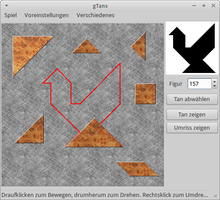
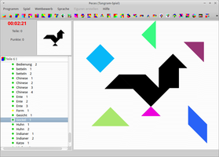
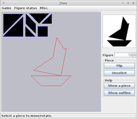

Tangram
Dieser Artikel wurde für die folgenden Ubuntu-Versionen getestet:
Ubuntu 16.04 Xenial Xerus
Ubuntu 14.04 Trusty Tahr
Zum Verständnis dieses Artikels sind folgende Seiten hilfreich:
Tangram ist ein altes chinesisches Spiel, bei dem man verschiedene vorgegebene Figuren aus sieben Spielsteinen (Tans) nachlegt. Dabei müssen sich die Einzelteile berühren und alle Steine verwendet werden. Die Anzahl der möglichen Figuren ist zwar nicht unendlich, aber entsprechend umfangreich. In der Regel handelt es sich dabei um Formen, deren Umrisse leicht mit realen Vorbildern assoziiert werden können (z.B. ein Haus, ein Hund, ein Vogel usw.). Zusammen ergeben die Einzelteile ein Quadrat.
In den offiziellen Paketquellen sind gleich zwei Umsetzungen für Linux enthalten. Enthalten sind jeweils etliche unterschiedliche Vorlagen, die anhaltenden Spielspaß versprechen. Darüber hinaus gibt es weitere Programmvarianten, die durch die Verwendung von Java plattformunabhängig sind.
Programme¶
Alle der im Folgenden genannten Programme sind desktop-unabhängig und können so unter allen Ubuntu-Varianten genutzt werden. Falls die erforderlichen Grafikbibliotheken nicht bereits installiert sind, werden diese automatisch nachinstalliert. Java muss dagegen erst explizit installiert werden (siehe Java/Installation).
|  |
| gTans |
|  |
| Peces |
|  |
| jTans |
gTans¶
Bei auf der Grafikbibliothek GTK basierenden Desktop-Umgebungen (Unity, GNOME, Xfce, LXDE) bietet sich gTans  an. Es kann aus den offiziellen Paketquellen installiert [1] werden:
an. Es kann aus den offiziellen Paketquellen installiert [1] werden:
gtans (universe)
 mit apturl
mit apturl
Paketliste zum Kopieren:
sudo apt-get install gtans
sudo aptitude install gtans
Der Programmstart [2] erfolgt bei Ubuntu-Varianten mit einem Anwendungsmenü über "Spiele -> Tangrams". Geboten werden ca. 400 unterschiedliche Formen und nützliche Hilfsmittel wie die Anzeige der zu legenden Figur als Umriss. Aufgrund seiner Einfachheit und auf die wesentlichsten Funktionen reduzierten Umsetzung kommt es der ursprünglichen Spielidee sehr nahe.
Während die linke Maustaste  wie gewohnt zum Legen und Verschieben eines Tans genutzt werden kann, ist das Drehen ungewohnt: der Mauszeiger muss sich knapp außerhalb eines Tans befinden, bevor dieses bei gedrückter linker Maustaste rotiert werden kann. Die rechte Maustaste
wie gewohnt zum Legen und Verschieben eines Tans genutzt werden kann, ist das Drehen ungewohnt: der Mauszeiger muss sich knapp außerhalb eines Tans befinden, bevor dieses bei gedrückter linker Maustaste rotiert werden kann. Die rechte Maustaste  dient zum Spiegeln eines Tans.
dient zum Spiegeln eines Tans.
Die möglichen Figuren sind auf mehrere Dateien verteilt. Möchte man eine andere öffnen, erfolgt dies über "Voreinstellungen -> Figurendatei...". Diese und andere Einstellungen werden im Ordner ~/.gtans/ im Homeverzeichnis gespeichert.
Peces¶
Auf die Grafikbibliothek Qt setzt dagegen Peces (Pieces = Teile, Stücke) des spanischen Entwicklers I. De Marchi. Es ist ebenfalls in den offiziellen Paketquellen enthalten und kann über die folgende Pakete installiert werden:
glpeces-data (universe)
glpeces (universe)
mit apturl
Paketliste zum Kopieren:
sudo apt-get install glpeces-data glpeces
sudo aptitude install glpeces-data glpeces
Der Programmstart erfolgt bei Ubuntu-Varianten mit einem Anwendungsmenü über "Spiele -> GLPeces". Auch hier dient die linke Maustaste zum Legen, während die rechte Maustaste im Uhrzeigersinn rotiert. Das Spiegeln erfolgt dagegen mit dem Mausrad  .
.
Tangram-Fans wird hier einiges geboten: von der Einstellung der Spielstärke (Kinder bis Experte), der farbigen Darstellung der Spielsteine und bis zur Möglichkeit, eigene Figuren zu kreieren (wenn die knapp 20.000 vorhandenen nicht ausreichen sollten...). Besonders interessant ist die obere Symbolleiste: hier stehen neben der klassischen Variante mit 7 Teilen auch Spiele mit mehr bzw. weniger Teilen oder ausgefallene Abwandlungen wie ein Ei- oder ein Herz-Tangram zur Verfügung. Über den Menüpunkt "Spiel -> Formname suchen" oder mit der Tastenkombination Strg + N kann auch gezielt nach einer Figur gesucht werden. Vorsicht nur bei Autos: bei den gefundenen Figuren handelt es sich nicht um ein Fahrzeug, sondern um automatisch erzeugte Figuren.
Einstellungen wie bereits gelöste Figuren werden im Ordner ~/.config/De Marchi/ abgelegt und beim nächsten Programmstart automatisch wiederhergestellt. Fazit: Mehr Tangram geht nicht.
Sonstige¶
Mit Java erstellte Programme sind plattformunabhängig, können also unter verschiedenen Betriebssystemen genutzt werden. Beide der oben genannten Programme stehen damit neben Linux auch unter anderen Betriebssystemen zur Verfügung (falls keine native Umsetzung vorhanden ist).


 - als Java-Variante
- als Java-VarianteNachdem man eine .jar-Datei oder eine Archivdatei (die noch entpackt werden muss) heruntergeladen hat, erfolgt der Programmstart mit folgendem Befehl [4]:
java -jar /PFAD/ZU/DATEI.jar
Mehr Komfort bietet ein Programmstarter, der allerdings erst erstellt werden muss.
 Programmübersicht
Programmübersicht- Erstellt mit Inyoka
-
 2004 – 2017 ubuntuusers.de • Einige Rechte vorbehalten
2004 – 2017 ubuntuusers.de • Einige Rechte vorbehalten
Lizenz • Kontakt • Datenschutz • Impressum • Serverstatus -
Serverhousing gespendet von